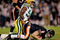

De: La Frikipedia, la enciclopedia extremadamente seria.
De: La Frikipedia, la enciclopedia extremadamente seria. De: La Frikipedia, la enciclopedia extremadamente seria.

|

|
|
|
|
|
|
| |
|---|---|---|---|---|---|---|---|---|
| Template Squad | Plantillas administrativas | Navboxes | Plantillas temáticas | Infoboxes | Frikiboxes | Plantillas para usuarios | Emoticonos | Directorio |

Las plantillas de enlaces (usualmente llamadas navboxes porque es más corto) son cajitas que se ponen al final de los artículos y que contienen enlaces (de ahí el nombre) a otros artículos relacionados temáticamente. Sirven para hacer llegar a los visitantes a la mayoría de los artículos y no solo a los más populares.
Los artículos pueden tener más de una navbox siempre que sean de temática no relacionada entre sí. Por ejemplo, el artículo de Lionel Messi lleva la plantilla de Furbo y la de Argentina. No tiene sentido agregarle la de Deporte porque ya está la de Furbo que es más específica.
En la siguiente sección presentamos el listado de plantillas disponibles. Cubren un gran abanico de temas, pero si hay alguno que no tenga su navbox puedes crearla, adelante, no hace falta ningún permiso especial. Tampoco hace falta tener grandes conocimientos del código wiki, copia y pega el código de alguna existente y luego modifica el contenido poco a poco, previsualizando a cada paso los cambios. Cuando tengas el "esqueleto" de la plantilla, puedes pedirle ayuda a algún frikipedista más experimentado para que te la retoque y ajuste detalles del diseño.
Si deseas crear una, he aquí algunas recomendaciones:
Ahora sí, he aquí las existentes, agrupadas por tema:
| |
|
Personajes
Shinigamis de alto Rango
Malos
Vizards
Otros
|
Código: {{Bleach}}
| Animes |
|---|
| Tokyo Babylon • Magic Knight Rayearth • Sakura Card Captor • X/1999 • Angelic Layer • Chobits • Code Geass • Tsubasa Reservoir Chronicle • Kobato • xxxHOLIC |
| Personajes |
| Sakura Kinomoto • Yuuko Ichihara • Fye |
Código: {{CLAMP}}
| |
Beyond Birthday • Halle Lidner • Kira • Kiyomi Takada • L Lawliet • Libreta negra • Light Yagami • Manual de uso de una Death Note • Matt • Mello • Misa Amane • Muerte paranoica • Mundo de los shinigami • Near • Rem • Ryuk • Shinigami • Sidoh • Síndrome de Light Yagami • Soichirou Yagami • SPK • Takeshi Obata • Teru Mikami • Touta Matsuda • Tsugumi Ohba • Wammy's house • Watari |
Código: {{Death Note}}
| |
| Personajes |
|---|
| Androide 17 • Androide 18 • Bardock • Bulma • Cell • Chaoz • Cooler •Freezer • Fuerzas Especiales Ginyu • Gayemba • Gogeta • Gotenks • Krilin • Majin Boo • Mr. Satán • Nappa • Oob • Piccolo • Raditz • Son Gohan • Son Goku • Son Goten • Son Pan • Tao Pai Pai • Ten Shin Han • Trunks • Videl • Vegeta • Vegetto • Yamcha |
| Otros |
| Akira Toriyamaismo • Dragon Ball AF • Dragon Ball GT • Dragon Ball Z: Budokai • Isamu • Kame hame ha • La orden Supersaiyan • Nube voladora • Namek • Síndrome de Dragon Ball |
Código: {{Dragon Ball}}
Código: {{Naruto}}
| | ||
|
Tripulación
Malosos
Banda Baroque
Otros
|
Código: {{One Piece}}
| | ||
|
Entrenadores
Pokémon
|
Código: {{Pokémon}}
| |
Afrodita • Aiakos • Aioria • Aioros • Aldebarán • Apolo • Caballeros dorados • Camus • Death Mask • Dohko • Exclamación de Atena • Generales Marinos • Hades • Hyōga • Hyperión • Hypnos • Ikki • Kagaho • Kanon • Milo • Minos • Mu • Poseidon • Radamanthys • Saga • Saint Seiya: The Lost Canvas - Hades Mythology • Saori • Seiya • Shaka • Shion • Shiryū • Shun • Shura • Síndrome de Saint Seiya • Tenma • Thanatos • Trío Dark |
Código: {{Saint Seiya}}
 Anime Anime | |||||
|---|---|---|---|---|---|
Personajes
Otros
|
Código: {{Anime}}
| | |||||||||
Antropología y Evolución
Rarezas biológicas inclasificables
|
Código: {{Biología}}
| |
|---|
| Diplodocus | Manuel Fraga Iribarne| Pedodáctilo | Penedector | Tiranosaurio rex | Tiranosaurio Sex | Triceratops | Velocirraptor |
Código: {{Dinobox}}
| | ||
|
Materia
Magnitudes
Mecánica
Cinética y Dinámica
Energía
Física Cuántica y Nuclear
Científicos
|
Código: {{Física}}
| Matemáticas |
|
Álgebra y Aritmética
Estadística
|
Código: {{Matemáticas}}
| | |||
Enfermedades
Farmacología y enfermería
|
Código: {{Medicina}}
| Planetas |
|---|
| Arrozconté § Coruscant § Ganímedes § Luna Lunera § Marte § Mateyko § Namek § Nintendus 64 § Omicrón-Persei 8 § Potato World § Península Ibérica § Planeta Agostini § Planeta friki § Planeta Klingon § Plutón § Raticulín § Saturno § Stroggos § Tamaplanet § Tatooine § Tierra § Venus § Wikiplanet |
Código: {{Planetas}}
| | |||
|
Código: {{Química}}
Tabla periódica de los elementos
| ||||||||||||||||||||||||||||||||||||||||||||||||||||||||||||||||||||||||||||||||||||||||||||||||||||||||||||||||||||||||||||||
|
Código: {{Tabla periódica}}
 Ciencias Ciencias
| ||
|---|---|---|
Ciencias Sociales
Ciencias Exactas
Ciencias Ocultas
|
Código: {{Ciencias}}
| |
Actores | | ||
|---|---|---|---|---|
|
Actores
Actrices
| ||||
Código: {{Actores}}
| | ||||
|---|---|---|---|---|
|
Comedia
Romance
Acción
Terror
Aventura
Artes Marciales
Anime
Infantiles
|
Código: {{Cine}}
| |
| J. K. Rowling | Personajes | Joguarts |
| Dambeldor | Draco Malfollado | Druggle | Ermión | Fred y George | Ginny Whyski | Harry Petas | Jagrid | James Petas | Lord Voldemort | Lucio Malfollado | Neville Longbottom | Ron Whyski | Seamus Finnigan | Severus Snape | Ziriuz 'el Negro' |
| Objetos/Hechizos Mágicos |
|---|
| Horrocrux | Capa de Invisibilidad |
| Películas/Libros |
| Harry Petas y la china descomunal | Harry Petas y la Cámara Porrera |
Código: {{Harry Petas}}
| |
|---|
| Personajes |
| Homer · Marge · Bart · Lisa · Maggie |
| Apu | Cletus | Comedido | Disco Stu | Dr. Nick Riviera | Duffman | Hank Scorpio | Hans Topo | La loca de los gatos | Lionel Hutz | Milhouse | Moe | Ned Flanders | Nelson Muntz | Profesor Frink | Ralph Wiggum | Señor Burns | Seymour Skinner | Spidercerdo |
| Otros |
| Barra Inanimada de Cabrono | Cerveza Duff | Flameado de Moe | Frases célebres de Homer | Frinkaedro | Homerianismo | Las mejores frases de Bart Simpson | Patetismo | Springfield | Taberna de Moe |
Código: {{Simpsons}}

| |
|
Personajes
Jedis
Siths
Otros
Películas
Otros
|
Código: {{Star Wars}}
| |
| Aquaman • Ass Rape • Bagman • Batman • Birdman • Cantar de mio Cid • Capitán Almería • Capitán México • Capitán Obvio • Charles Atlas • Conejitou • Cálico Electrónico • Doctor Extraño • Don Patch • Duffman • Duke Nukem • El Chapulín Colorado • El Elegido • El Fusilero • El Tio la Vara • El Vengador Tóxico • El impotente Hulk • Fantasma del Espacio • Flash • Franchesco Monaguigui • Gallina SWAT • Hombres de Negro • Huevoman • Iron Man • Jaguar Man • James Bond • Juana de Arco • Julk • K-K Man • Las Tortugas Ninja • Linterna Verde • Lord Jaguar • Los 4 Fanáticos • Los Gemelos Fantásticos • Los Vengadores • Marko Zaror • Mazinger Metal • Megaman • Megaman Volnutt • Megaman Zero • Mister Kat • Miñoman • Mr. Fantástico • Musulman • Pedobear • Peter Parker • Pixelman • R2 D2 • Rorschach (Watchmen) • Salad fingers • Shantozkit • Slenderman • Sláine • Spider-Man 2099 • Spidercerdo • Spiderman • Spiderman del pasado • Stan Lee • Super Marvel • Super eñe • Superbono • Superhéroe • Superman • Supermendigo • Súper Rodegud • Ultimate Fantastic Four • VHS Juan • Valentina Tereshkova • Villano • Watchmen • X-Men • Xena |
Código: {{Superhéroes}}

| |||
Cadenas de televisión
Personajes de animación
|
Código: {{Televisión}}
| |
|---|
| |
| |
| |
Código: {{Dioses egipcios}}
| |
|---|
|
Ἀφροδίτη · Ἀπόλλων · Ἄρεως · Αρτεμιςαρ · Ἀθηνᾶ · Χρόνος · Δημήτηρ · Διώνυσος · Γαῖα · ᾍδης · Ἥφαιστος · Ἧρα · Έρμῆς · Ἑστία · Ποσειδῶν · Προμηθέας · Περσεφόνη · Οὐρανός · Ζεύς |
Código: {{Dioses griegos}}
| Deidades Shintoístas |
| B-ウサギ · 銀 · 我妻 由乃 · 青野 月音 · ルルーシュ・ランペルージ · 緋村 剣心 · 糸色 望 · Александр "Саша" Николаевич Хэлл · サトシ · 中嶋 悟 · 佐藤琢磨 |
Código: {{Dioses nipones}}
| | |||
|---|---|---|---|
|
Clásicos
Esos que tus padres te decían para que te comieras las verduras
Tus peores pesadillas
|
Código: {{Monstruo}}
 Religión Religión
| ||||
|---|---|---|---|---|
|
Religiones y creencias
Dioses
Cristianismo
|
Código: {{Religion}}
| | ||||||
|
Código: {{Fórmula 1}}
| Furbo | |||
|---|---|---|---|
|
Código: {{Furbo}}
|  Furbo americano |
|---|
| AFC Sur | AFC Oeste | NFC Norte | NFC Oeste | Súper Tazón |
Código: {{Furbo Americano}}
| |
|---|
| Almería · Córdoba · Eibar · Elche · Getafe · Levante · Málaga · Rayo Vallecano · Madrid · Real Suciedad · Sevilla · Valencia · Villarreal |
Código: {{LFP}}
 Lucha Libre Lucha Libre 
| |||
|---|---|---|---|
|
Actuales
Leyendas
Divas
Tag Teams y Stables
|
Código: {{Lucha Libre}}
| | |
|
Código: {{MotoGP}}
| | ||||
|---|---|---|---|---|
|
Deportes
Deportistas
Competiciones
Otros
Artes Marciales
|
Código: {{Deportes}}

|
Asturies |
|---|---|
| Geografía | |
| Avilés | Colloto | Lluanco | Mieres | Taramundi | Tinéu | Uviéu | Xixón | |
| Personalidades | |
| David Villa | Don Pelayo | Fernando Alonso | La Marquesina | Letizia Ortiz | Melendi | Tino Casal | |
| Otros | |
| Asturianos | Bable | Dinastía Astur | Feria de Muestres d'Asturies | Real Sporting de Xixón | Real Uviéu | Sidra | WarCry |
Código: {{Asturias}}
Comunidaz  de Madriz de Madriz
|
|---|
| Geografía |
| Alameda de Osuna | Alcorcón | Coslada | Fuenlabrada | Getafe | Griñón | Humanes de Madrid | Leganés | Madriz | Móstoles | Pozuelo de Alarcón | San Martín de la Vega |
| Personalidades |
| Alejandro Sanz | David de Gea | Fernando Torres | Guti | Iker Casillas | Luis Aragonés | Mario Vaquerizo | Míchel |
| Otros |
| Circuito del Jarama | Getafe Club de Fútbol | Real Mandril | Patético de Madrid | Rayo Vallecano | Santiago Bernabéu | Universidad Carlos III de Madrid | Vicente Calderón |
Código: {{Comunidad de Madrid}}

|
País Valencià |
|---|---|
| Geografia | |
| Alacant | Almassora | Alzira | Benidorm | Castelló | Crevillent | Dénia | El Barranquet | Elda | Elx | Figueroles | Gandia | l'Alcora | La Vila Joiosa | Oliva | Onda | Orihuela | Paiporta | Patraix | Picanya | Província de Castelló | Puçol | València | Vila-real | Xodos | |
| Personalitats | |
| Aloy | El niñato del metro de València | Manolo el del Bombo | Rita Barberà Nolla | |
| Altres | |
| Almussangeles | Canal Nou | Circuit Ricardo Tormo | Sapos UD | Universitat d'Alacant | Valencià | Vila-irreal C.F. | Violència C.F. |
Código: {{Comunidad Valenciana}}

|
Galiza |
|---|---|
| Xeografía | |
| A Coruña | A Laracha | Carballo | Cariño | Cedeira | Ferrol | Fisterra | Monte do Gato | Santa Comba | Santiago de Compostela A Gudiña | Allariz | Arnoia | Bande | Beade | Carballiño | Celanova | Lobios | Louredo | Maside | O Pereiro de Aguiar | Ourense | Ribadavia | Verín | Xinzo de Limia | |
| Personalidades | |
| Políticos
Outros
| |
| Outros | |
| Galicia Bilingüe | Heredeiros da Crus | Koruño | La Coz de Galicia | Luar | Manual del gallego perfecto | Ourensanos | Peinador | Prestige | Suevos | Vigués | Xunta de Galicia |
Código: {{Galicia}}

|
Islas Canarias |
|---|---|
| Geografía | |
| El Paso | La Palma | Las Galletas | Los Llanos de Aridane | Tenerife | |
| Personalidades | |
| Aythami Artiles | Pedrito | Pepe Benavente | Raquel del Rosario | |
| Otros | |
| Club Deportivo Tenerife | Coyo | Sancocho | Televisión Canaria |
Código: {{Islas Canarias}}
| |
|
| |||
|
Personalidades
Fulbo
Clubes
Jugadores
Otros
Políticos
Tribus urbanas
Televisión y Cine
Música
Geografía
Otros
| |||||
Código: {{Argentina}}
| | |||||||||
|---|---|---|---|---|---|---|---|---|---|
|
Geografía
Personalidades
Furbo y furbolistas
Música
Política
Tipos de colombiano
Otros
|
Código: {{Colombia}}
| Honduras |
|
Personajes
Ciudades
Television
Portal
|
Código: {{Honduras}}
| | |||||
|---|---|---|---|---|---|
|
Estados Libres y Soberanos Pero Igual Subordinados
Ciudades, Localidades y Ejidos
Ratas de dos patas
Personalidades
Deporte y Deportistas
El Mundo del Espectáculo, la Farándula, Luminarias y otras Vergüenzas
Tribus Urbanas Nacionales
Furbo y Furbolistas
Empresas e Instituciones
Historia y su Rara Cultura
Otros
|
Código: {{México}}

|
|
Fúlbol
Personajes, celebridades y demás figuretis
Internet, música y televisión
Políticos
|
Código: {{Perú}}
| | |
|---|---|
|
Lugares
Fulbo
Política
Uruguayos célebres
|
Código: {{Uruguay}}
| | |
| Geografía
Personalidades
Furbo
Otros
|
Código: {{Venezuela}}
| |
|---|
| Bahamas | Barbados | Dominica | Granada | Guyana | Haití | San Cristóbal y ¿Nieves? | San Vicente y las Granadinas | Santa Lucía | Trinidad y Tobago | Uruguay | Venezuela |
Código: {{Países de América}}
| Países de Asia |
|---|
| Arabia Saudita • Azerbaiyán • Bahrein • Bangladesh • Bután • Birmania • Brunéi • Camboya • Emiratos Árabes • Indonesia • Jordania • Kuwait • Kirguistán • Maldivas • Nepal • Omán • Qatar • Singapur • Sri Lanka • Tayikistán • Timor Oriental • Yemen |
Código: {{Países de Asia}}
  Imperios de Europa Imperios de Europa
|
|---|
| Eslovaquia |
Código: {{Países de Europa}}
| |
|---|
| Alt+F4 | Any Key | Asdasd | ASDF | Bloq Despl | Ctrl+Alt+Supr | Ctrl+C Ctrl+V | Intro Ctrl+X | Ctrl+Z | Qwerty | Qweqwe | Teclado |
Código: {{Combinaciones del teclado}}
| | |
| BSD | FreeBSD • OpenBSD |
| GNU/Linux | Debian • Distro • GNU • Gentoo Linux • Linux • Ubuntu |
| Hasefroch | DOS • MS-DOS • 1.0 • 3.1 •95 • 98 • 2000 • Me • XP • Vista • 7 • 8 |
| Mac | Mac OS • Mac OS X |
| Otros | Android • Armario • Disquete • EMacs • Federico OS • Hore • Singularity • Squeak • Domination XP • MATRIX |
Código: {{Sistemas Operativos}}
| |
|---|
| 4chan • Anarcopedia • Argim.net • Asco de vida • Cleverbot • Cuánto Cabrón • Desmotiva2 • Desmotivaciones • EBay • EBuddy • Encyclopædia Dramatica • Facebook • Forocoches • Gamil • Gatitas Pop • Google Groups • GTAChile • Habbo Hotel • Hispachan • Hotel626 • Identi • IMDb • Inciclopedia • Instagram • La Súper Cafetera • Last.FM • Locüendo • Man red • Maristation • Media-Vida • Megaupload • Menéame • Metroflog • MySpace • Poringa! • Que pasa • Red social • RedTube • Rule 34 • Taringa! • Traductor Google • Tuenti • Tumblr • Twitter • U.N Cuyo • Uncyclopedia • Vagos.es • Vota mi cuerpo • What Da Faq • Wikia • Wikileaks • Wikipedia • Wikipediars • Windows Update • Xvideos • Yahoo • Yahoo! Respuestas • YouTube • |
Código: {{Sitios Web}}
| | |
|---|---|
|
Código: {{Youtube}}
| | ||||||||||||
|---|---|---|---|---|---|---|---|---|---|---|---|---|
Personajes
Programación
Dispositivos de Almacenamiento
Expresiones Interneteras
Software
Empresas
Para tu carrera
|
Código: {{Informática 1}}
| |
| Letras |
| D • F • G • J • N Q • R • S • T • W • Y • Z |
| Símbolos |
| ← • → • ☃ • 蛋 • ☂ • இ • ټ • # • ? |
Código: {{Abecedario}}

|
Diccionarios | |
|---|---|---|
|
Código: {{Diccionarios}}
| Språk |
| -.-. --- -.. .. --. --- -- --- .-. ... . • A gugu tata • AAAAAAAAAAAAAAA • Deutsch • Andalúh • Argentino • Bable • Bengatio • Braile • Castellano antiguo • Castenciano • Català • Chimpancé • 漢語 • Cristiano • Croa Croa • Élfico • Engrish • Sédaseverne • Español • Esperanto • Euskera • Français • Galego-portugués • Gondwanés • Gñapés • HAVDITE • HOYGAN • Hxsøčolkφσ • Mésenller • English • Italiano • TlhIngan • Koruño • 1337 • Guau • Lingua latina • R.I.P. • Me me • Neolingua • Panocho • فارسی • Português • Pokémon • ROT13 • SMS • Sacatunn que pen • Spanglish • Toki pona • Tururu • Valencià • Vigués • Ελληνική γλώσσα • Русский • ←↕↕↓→↓↓↕↑↨↓ • 日本語 |
Código: {{Idiomas}}
| | ||
|---|---|---|
Escritores
Géneros literarios
|
Código: {{Literatura}}
| | ||
|---|---|---|
|
Código: {{Guerras}}
| Héroes |
|---|
| Action Man • Afilador • Angus Young • Arnold Schwarzenegger • Astérix el Galo • Austin Powers • Black Rock Shooter • Bruce Lee • Che Copete • Chino Cudeiro • Chuck Norris • Dimitri • Don Ramón • El Héroe Mediatis • El Quijote • Escrotoncio • Goku • Gregory House • Indiana Jones • Jack Bauer • Jackie Chan • James Bond • Jesús de Nazaret • Jimi Hendrix • Luigi • MacGyver • Michael Moore • Mortadelo y Filemón • Mr. Proper • Rambo • Rémi Gaillard • Rocky • El Cid • San Ganchao • Takuma Sato • The Boogeyman • Tony Melendez • Txumari Alfaro • Vin Diesel |
Código: {{Héroes}}
| |
|---|
| Al-Ándalus • Antigua Grecia • Antiguo Egipto • Atlántida • Cultura Maya • Estados Confederados de América • Imperio Azteca • Imperio Bizantino • Imperio Británico • Imperio Huno • Imperio Inca • Imperio Español • Imperio Francés • Imperio Otomano • Imperio Romano • Imperio Ruso • Prusia • Reino suevo • Reino ostrogordo • Reino visigodo • Sacro Imperio Romano Germánico • U.R.S.S. |
Código: {{Imperio antiguo}}

|
Reyes de España |
|
|---|---|---|
| Luis I » Fernando VI » Carlos III » Carlos IV » Fernando VII » José I Napoleón » Isabelota II » Amadeo I » Alfonso XII » Alfonso XIII » Magneto I » Felipe VI |
Código: {{Reyes de España}}
 Empresas Empresas 
|
|---|
|
Bimbo $ Burger King $ Coca-Cola $ Duff $ Empresas pesqueras de Osaka $ KFC $ McDonald's $ Nocilla $ Oscar Mayer $ Pepsi $ Pizza Hut $ Starbucks 4Kids $ Air Madrid $ Audioskan $ Blizzard $ Compañía de tranvías da Coruña $ Correos $ Diario AS $ Diario GOL $ Discográfica $ El jueves $ Ikariam $ Marca $ Mundo Deportivo $ Playboy $ Vale Music $ Vitrasa CNN $ Canal Sur $ La 2 $ Luar $ Telerisa $ TV Azteca $ TVE $ Studio Basura $ Teleahinco $ Paka Paka $ Discovery Kids $ Disney XD $ Cuatroº ACME $ Agfa $ Akatsuki $ Bic $ BMW $ Bosque verde $ CLAMP $ Copyleft $ Godbusters $ ETT $ El MAL $ Fisher Price $ Ford $ Greenpeace $ Hombres de negro $ Horóscopo $ Hunosa $ Iglesia maradoniana $ KIEP $ Lego $ Mapfre $ MCC $ Oficina $ Organización XIII $ PDVSA $ RMC $ Ryanair $ Sanrio $ SWAT $ Umbrella $ VolBaguen $ WDC |
Autor(es):